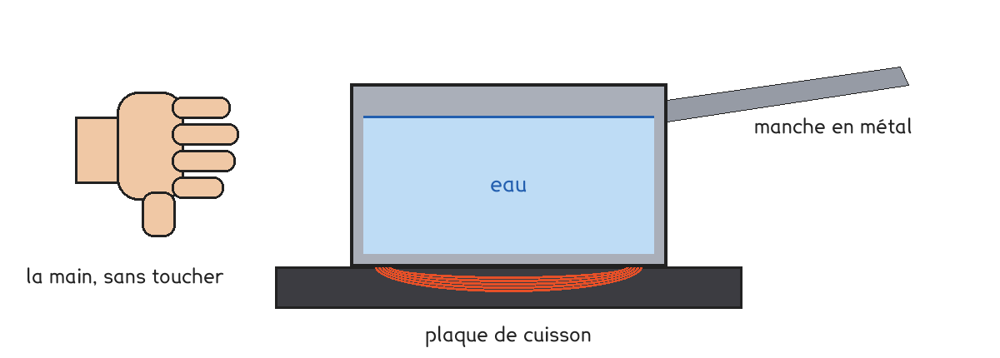
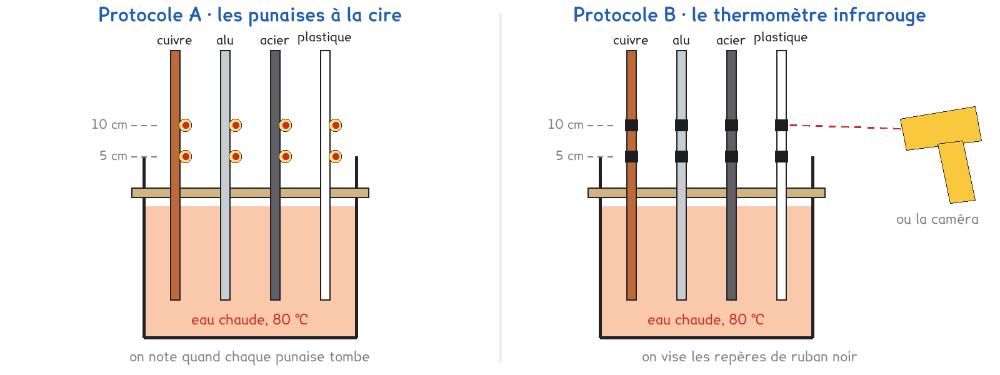

1re ou Tle Bac Pro · toutes spécialités · TP commun CT-10
Par quels chemins la chaleur de la plaque se déplace-t-elle ?
2 figures
Sujet. Une casserole d’eau chauffe sur la plaque. Le manche en métal devient brûlant, l’eau chaude du fond remonte vers la surface, et une main tendue à côté sent la chaleur sans rien toucher.

Problématique : par quels chemins la chaleur de la plaque se déplace-t-elle ?
Document. La chaleur passe toujours du corps le plus chaud vers le plus froid, de trois façons. La conduction : de proche en proche dans la matière, qui ne bouge pas. La convection : un liquide ou un gaz chauffé se déplace et emporte la chaleur. Le rayonnement : sans matière, même dans le vide, comme la chaleur du soleil.
a) D’après le document, entourer le mode de transfert de chaque situation.
| La situation | Le mode de transfert, entourer |
|---|---|
| la cuillère dans le thé chaud | conduction · convection · rayonnement |
| l’air du radiateur monte | conduction · convection · rayonnement |
| le soleil chauffe la peau | conduction · convection · rayonnement |
| le feu de camp, senti à 2 m | conduction · convection · rayonnement |
On pose la main, à 33 °C, sur une canette sortie du réfrigérateur, à 5 °C.
b) Entourer le sens du transfert de chaleur.
de la main vers la canette · de la canette vers la main
On compare d’abord quatre tiges de même taille, en cuivre, en aluminium, en acier et en plastique, plongées dans l’eau chaude. Deux protocoles répondent à cette question : une partie de la classe prend A, l’autre prend B, et on compare à la fin.

Protocole A · les punaises à la cire. Deux punaises sont collées à la cire sur chaque tige, à 5 et à 10 cm au-dessus du carton. Quand la chaleur arrive, la cire fond et la punaise tombe. On note l’instant.
Protocole B · le thermomètre infrarouge. Sur chaque tige, deux carrés de ruban noir aux mêmes hauteurs. On vise chaque carré et on relève sa température après six minutes.
Les deux protocoles finissent par les deux mêmes observations : un colorant dans l’eau, puis la chaleur d’une lampe.
c) Compléter le tableau pour comparer les deux protocoles.
| Protocole A | Protocole B | |
|---|---|---|
| Ce qu’on relève | …………………………… | …………………………… |
| On obtient une valeur de température | oui · non | oui · non |
| Une limite | …………………………… | …………………………… |
Le choix se fait maintenant, avant de toucher au matériel.
d) Quel protocole prenez-vous ? Justifier en une phrase.
Le professeur peut vous imposer celui qui reste disponible.
Je prends le protocole ……… parce que ……………………………………………………………………
e) Avant de mesurer, faire une hypothèse. Classer les quatre tiges,
de celle qui conduit le mieux la chaleur à celle qui la conduit le moins.
1 : ………………… 2 : ………………… 3 : ………………… 4 : …………………
Avant de commencer
L’eau chaude, à 80 °C, est versée par le professeur. Le bécher ne se déplace plus ensuite.
Les tiges métalliques brûlent : on ne les touche qu’avec la pince, jamais à main nue.
L’ampoule dépasse 100 °C : la main reste à 20 cm, jamais au contact.
Observation de la convection. Un petit flacon d’eau chaude colorée est posé au fond d’un grand bécher d’eau froide. En B, la caméra filme aussi la surface, d’en haut.
f) Dessiner le bécher et le flacon, puis le trajet du colorant par des flèches.
Le schéma se dessine sur la feuille du TP.
g) Main à 20 cm à côté de la lampe allumée, pas au-dessus : que sent-on ?
En B, viser aussi un carton noir posé au même endroit.
Le mode de transfert, entourer : conduction · convection · rayonnement
h) À la fin des dix minutes, relever vos résultats puis classer.
| La tige | A · punaise à 5 cm, tombée à | A · punaise à 10 cm, tombée à | B · θ à 5 cm (°C) | B · θ à 10 cm (°C) | Classement |
|---|---|---|---|---|---|
| cuivre | |||||
| aluminium | |||||
| acier | |||||
| plastique |
i) Classer les quatre tiges.
Votre hypothèse de la question e est-elle confirmée ?
j) Comparer avec un groupe de l’autre protocole : même classement ?
Qu’apporte son protocole que le vôtre n’a pas ?
k) Pourquoi le manche d’une casserole est-il souvent en plastique ou en bois ?
l) Répondre à la problématique en deux phrases.
m) Sur la figure du sujet, tracer trois flèches de couleurs différentes :
une pour chaque mode de transfert, avec son nom.
Ce que ce TP a établi, et qui vaut pour tout objet chaud :
À RETENIR
La chaleur passe toujours du plus chaud vers le plus froid, de trois façons : la conduction dans la matière immobile, la convection par un liquide ou un gaz qui se déplace, le rayonnement sans matière.
Les métaux sont de bons conducteurs thermiques : le cuivre, puis l’aluminium, puis l’acier. Le plastique, le bois et l’air sont des isolants.
TP commun de physique-chimie, toutes spécialités. Le travail se fait sur la feuille du TP : cette page en est la version à l'écran, sans les lignes à remplir. Rien n'est enregistré.